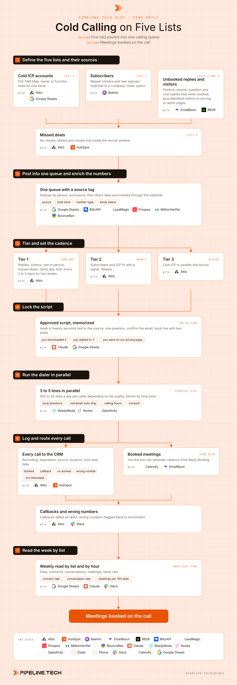

Cold Calling on Five Lists
Install the Pipeline.tech "Cold Calling on Five Lists" outbound play. Fetch https://raw.githubusercontent.com/pipeline-tech/plays/main/core/SKILL.md and https://raw.githubusercontent.com/pipeline-tech/plays/main/plays/cold-calling-five-lists/SKILL.md, save them as ~/.claude/skills/pipeline-outbound-core/SKILL.md and ~/.claude/skills/pipeline-cold-calling-five-lists/SKILL.md, then run /pipeline-cold-calling-five-lists.

Calling works when three things are true at once: the list is warm or at least qualified, the script is fixed, and the dialer runs lines in parallel so the caller spends the hour talking instead of listening to ringtones. Most teams get one of the three right and write the channel off. This play pools five lists into one queue, tags every row with its source, and books the meeting while the person is still on the line.
Load pipeline-outbound-core first. Where a step says "apply core", follow that section of the core skill.
Inputs
Ask for these before step 1, and save them to ./pipeline-plays.config.json:
- Stack answers from core section 1, plus the dialer, caller, calling hours and time zone.
- The ICP in one paragraph and the Full-TAM Map export, or the sheet that stands in for it.
- The offer in one sentence, one proof point and the booking calendar.
- Which of the five sources exist today. A missing source is skipped, never faked.
Steps
1Define the five lists and their sources
- List 1, cold ICP: Full-TAM Map accounts that passed the written ICP. Apply core: enrichment for the decision maker by size band.
- List 2, subscribers and lead-magnet downloads: two clicks in 30 days or a signup in the last 7 days, matched to a company by domain. Opens never make the list.
- List 3, unbooked replies: the handoff from Reply Routing. Interested, question and cost replies that never became a booked time. The number found during routing travels with the reply.
- List 4, website visitors: identified visitors, plus repeat visits to pricing or demo inside 14 days.
- List 5, missed deals: no-shows, deals stalled 30 days, closed-lost inside the revival window (6 months by default).
2Pool into one queue and enrich the numbers
- Merge the five lists into one queue. Every row keeps its
sourcetag and the date it qualified. Dedupe by person; on two lists, keep the warmer tag (list 3 beats list 1) and note both. - Apply core: exclusions. Also remove anyone on a do-not-call list or who asked not to be called.
- Numbers go through a waterfall, each vendor seeing only what the one before it missed. BlitzAPI first for owner-operators. LeadMagic then Prospeo for business mobiles and direct dials. Normalise every number to one format with the country code and record its time zone.
- Any email used alongside the call: apply core: verification. A number with no valid email is still called.
3Tier and set the cadence
- Apply core: tiering, with the source doing most of the work. Tier 1 is lists 3, 4 and 5 plus anyone met in person: called the same day they land, then every 2 to 3 days for two weeks.
- Tier 2 is list 2 plus any list 1 account with a dated signal: one attempt a week for four weeks.
- Tier 3 is the rest of list 1: parallel blocks by time zone, two attempts per quarter, then email only.
- Claude writes a one-line context note per Tier 1 row from the reply thread or visit history, so the caller knows the hook before the line connects.
4Lock the script
- One script per list, approved by the owner and memorized by the caller. No ad-libbed positioning. Sentences may move, claims may not.
- The hook lands inside the first twenty seconds and names the source: "you downloaded X", "you replied to Y about Z", "you were on our pricing page on Tuesday". Cold ICP opens with the segment's pain, never a compliment.
- Then one question, and the caller listens.
- Close by confirming the email on file and booking live with two specific times inside 2 business days. Never "I'll send a link". The invite goes out on the line.
- A voicemail script under 15 seconds: name, company, the source hook, a call-back number. No pitch.
5Run the dialer in parallel
- Load the queue with the source tag and context note. Dial 3 to 5 lines in parallel, voicemail auto-skip on, local presence on where it is lawful.
- Volume follows list quality: Tier 1 on 2 lines, 100 to 300 dials a day; Tier 3 cold blocks at 1K to 2K dials a day per caller.
- A 90-minute block per time zone, late morning and mid afternoon local time, inside the calling hours and consent rules of the recipient's country and state. A small team runs the same blocks from a plain dialer or the phone.
6Log and route every call
- Apply core: CRM and alerts. Every call writes the recording link, disposition, source tag, duration and next step date. A booked call opens a deal; no-shows stay deals in a lost stage.
- Booked meetings enter the pre-call reminder cadence from Reply Routing: confirmation now, reminders at 24 hours, 4 hours, 1 hour and 10 minutes. Nothing booked past 2 days.
- A callback is a dated task at the time the prospect gave, never a note. A wrong number goes back to step 2 for a second pass; still none, the row stays on the list with a flag.
- "Do not call" removes the number from the dialer and the CRM the same day.
7Read the week by list
- Weekly, per list: dials, connects, conversations over 2 minutes, meetings booked, meetings held, show rate. Connect rate by list and by hour in the prospect's zone.
- Move dial time toward the lists that convert. If list 3 books every 15 connects and list 1 every 80, list 3 is called first each morning.
- Two recordings per caller per week are checked against the script; drift is fixed before the next block.
- Apply core: credits and handoff.
Guardrails
- Calling hours, consent and do-not-call rules of the recipient's country and state come first.
- The script is the script. A caller who cannot answer a question says so and books the call.
- Never "I'll send a link". Two times, booked live, invite sent before the call ends.
- Opens are not a signal. List 2 is clicks and signups only.
- A number found through Reply Routing is for the warm call about that reply. It never moves to a cold block.
Example run
User: "/pipeline-cold-calling-five-lists for our payroll offer to 20 to 200 person companies, one caller, Eastern hours, we have the newsletter and visitor identification"
- Confirmed the CRM, newsletter tool, visitor tool, reply routing and dialer. Loaded the ICP and offer.
- Week one: 1,840 cold ICP, 212 subscribers, 38 unbooked replies, 61 visitors, 27 missed deals. After dedupe and exclusions 2,104 rows, 126 in Tier 1.
- Numbers found for 1,537 rows (73 percent), 1,120 of them mobiles. 88 wrong numbers flagged back after the first blocks.
- Five scripts approved, caller drilled for two days, voicemail under 15 seconds.
- 4,210 dials across four blocks a day. 389 connects, 141 conversations over 2 minutes, 23 meetings booked on the call, 19 held.
- By list: replies 9 meetings from 41 connects, missed deals 5 from 29, visitors 4 from 38, subscribers 3 from 67, cold 2 from 214. Cold blocks moved to the last hour; Tier 1 dialed first each morning.